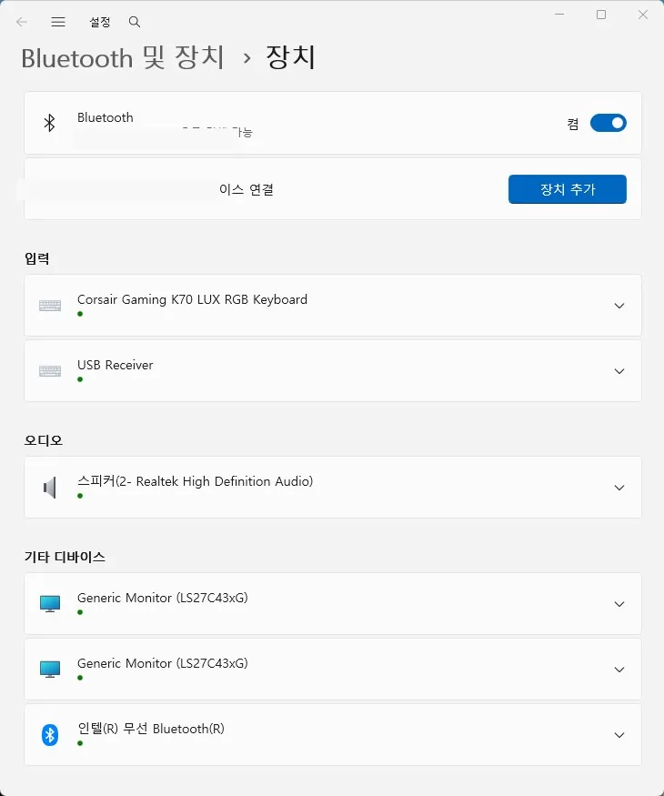

블루투스
블루투스 장치 미검색 원인과 점검 순서
이어폰, 키보드, 마우스가 검색 목록에 나타나지 않는 경우
블루투스 장치 미검색은 PC 어댑터 고장보다 장치가 페어링 모드에 들어가지 않았거나 이미 다른 휴대폰에 연결된 경우가 더 흔합니다. 이어폰과 키보드는 전원이 켜진 상태와 페어링 대기 상태가 다르므로 제조사 안내에 맞는 버튼 조작이 필요합니다.
Windows 11에서는 블루투스 장치 검색 범위 설정에 따라 일부 장치가 목록에 늦게 나타날 수 있습니다. 비행기 모드, 거리, 배터리, 기존 페어링 기록을 먼저 정리한 뒤에도 검색되지 않을 때 드라이버와 서비스를 확인하는 순서가 효율적입니다.
USB 블루투스 동글을 사용한다면 허브 전력 부족과 포트 간섭도 변수입니다. 본체 포트에 직접 연결하고 다른 USB 3.x 장치와 거리를 둔 상태에서 다시 검색해 보세요.
이 가이드가 필요한 상황
- 블루투스 켜기 버튼 자체가 설정에서 사라졌다.
- 장치는 보이지만 연결을 누르면 바로 실패한다.
- 절전 복귀 후 어댑터가 장치 관리자에서 사라진다.
먼저 확인할 항목
- 장치의 페어링 모드 확인 — 전원만 켜진 장치는 주변 검색에 노출되지 않을 수 있고, 다른 기기에 연결 중이면 PC가 찾지 못합니다. 다른 휴대폰의 블루투스를 잠시 끄고 장치 표시등이 페어링 패턴으로 깜빡이는지 확인하세요. 장치와 PC를 1m 이내에 둡니다.
- Windows 검색 범위와 비행기 모드 확인 — 검색 설정이 제한되어 있거나 비행기 모드가 켜져 있으면 정상 장치도 표시되지 않습니다. 설정의 Bluetooth 및 장치에서 Bluetooth를 껐다 켜고, 장치 검색 설정을 고급으로 바꾼 뒤 다시 추가합니다.

- 기존 등록을 삭제하고 다시 연결 — 오래된 인증 키나 중단된 페어링 기록이 남으면 장치가 보여도 연결에 실패할 수 있습니다. 기존 장치를 제거한 뒤 PC와 블루투스 장치를 모두 재시작하고 처음부터 페어링합니다.
- 어댑터 드라이버와 절전 설정 점검 — Bluetooth 항목이 사라지거나 절전 후 반복된다면 어댑터 드라이버와 전원 관리가 핵심입니다. 장치 관리자에서 Bluetooth 어댑터의 느낌표를 확인하고 드라이버 업데이트, 재설치, 이전 버전 복원을 순서대로 시험합니다. 제조사 드라이버를 우선 사용하세요.
원인을 더 정확히 나누는 방법
장치가 안 보이는 경우와 연결 실패의 차이
목록에 전혀 보이지 않으면 페어링 모드, 검색 범위, 어댑터 상태를 먼저 봅니다. 목록에는 있지만 연결만 실패하면 기존 등록 정보, 배터리, 다른 기기와의 연결, 지원 프로필 문제를 더 우선해서 확인합니다.
블루투스 버튼이 사라졌을 때
빠른 설정에 버튼이 없는 것과 장치 관리자에서 어댑터 자체가 없는 것은 다릅니다. 장치 관리자에서 보기의 숨김 장치 표시를 확인하고, USB 동글이라면 다른 본체 포트에 직접 연결해 하드웨어 인식 여부를 먼저 판단하세요.
확인 결과에 따른 다음 단계
- 다른 휴대폰에서는 검색될 때 — 블루투스 장치보다 PC의 검색 설정, 어댑터 드라이버, 기존 페어링 기록을 중심으로 점검하세요.
- 어떤 기기에서도 검색되지 않을 때 — 장치가 페어링 모드인지와 배터리 상태를 다시 확인합니다. 초기화 방법이 있는 제품은 제조사 절차에 따라 초기화한 뒤 시험하세요.
피해야 할 실수
- 전원이 켜진 상태를 페어링 모드로 착각하는 것
- 기존 연결 기록을 남긴 채 연결 버튼만 반복해서 누르는 것
- 노트북 제조사 드라이버를 확인하지 않고 임의 드라이버를 여러 번 설치하는 것
자주 묻는 질문
- 블루투스 이어폰이 휴대폰에는 연결되는데 PC에는 안 보입니다. 이어폰이 휴대폰에 이미 연결되어 있을 가능성이 큽니다. 휴대폰 블루투스를 잠시 끄고 이어폰을 명시적으로 페어링 모드에 넣은 뒤 PC에서 다시 검색하세요.
- 업데이트 후 블루투스가 사라졌습니다. 장치 관리자에서 어댑터 상태를 확인하고 드라이버 롤백 또는 PC 제조사 최신 드라이버 설치를 시험하세요. 어댑터가 전혀 보이지 않으면 완전 종료 후 다시 켜는 과정도 필요할 수 있습니다.
PC 자체에 블루투스가 없거나 내장 모듈이 고장났다면 블루투스 동글을 추가하는 방법도 있습니다.
이 포스팅은 쿠팡 파트너스 활동의 일환으로, 이에 따른 일정액의 수수료를 제공받습니다.
최종 검토일: 2026-07-14